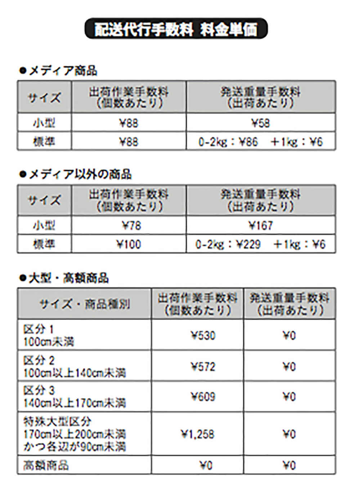
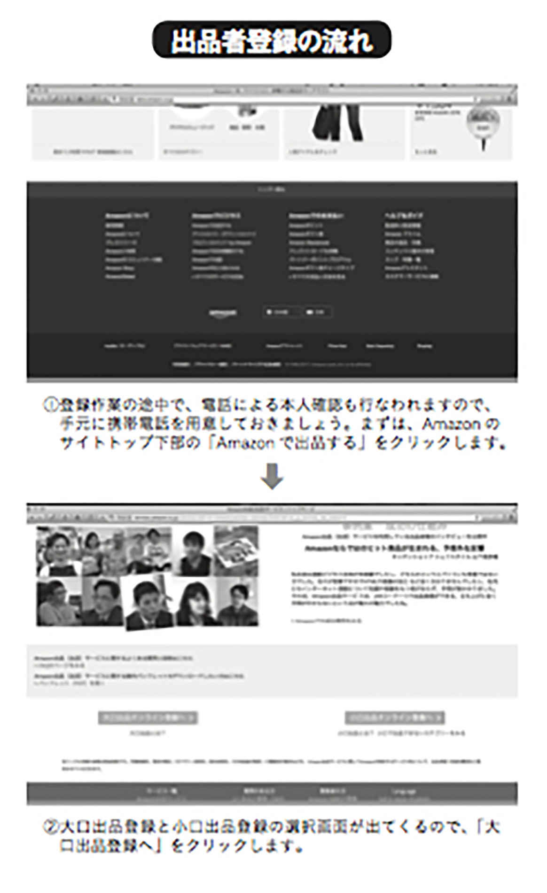
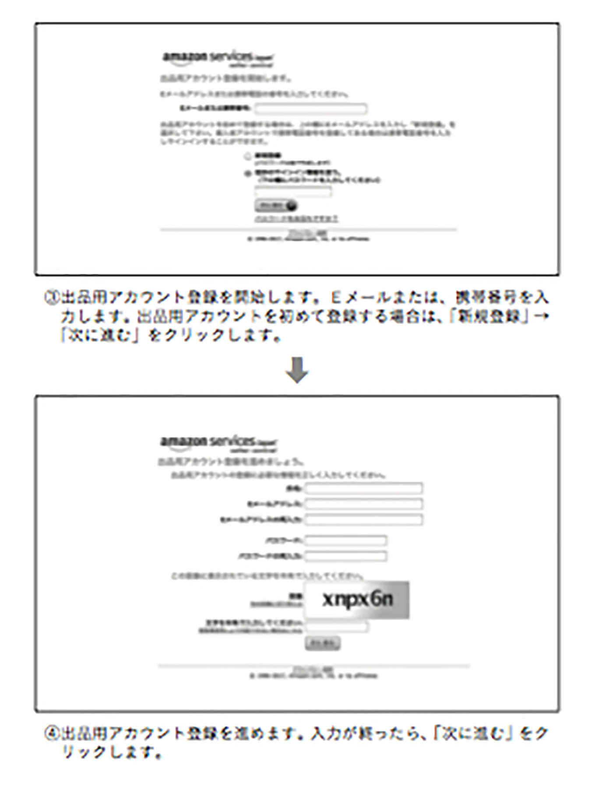
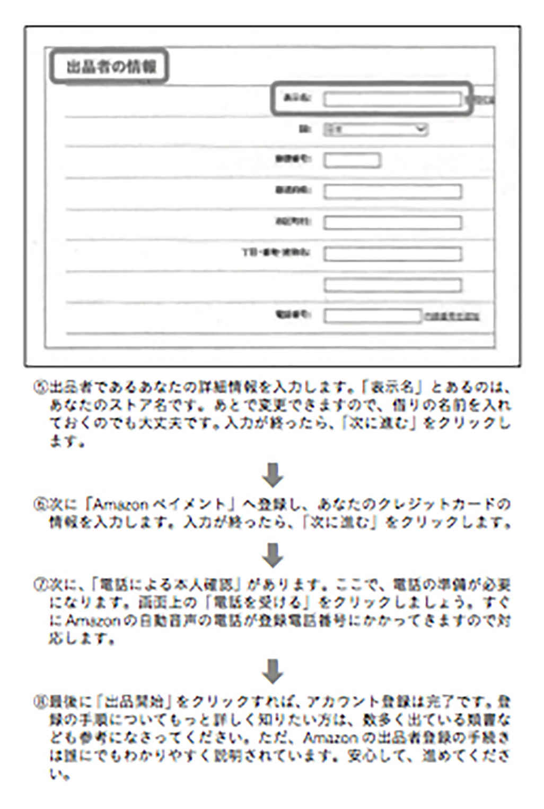
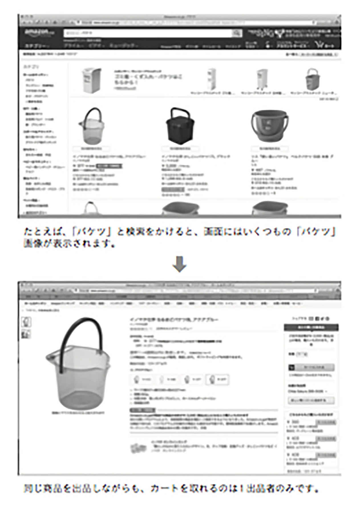
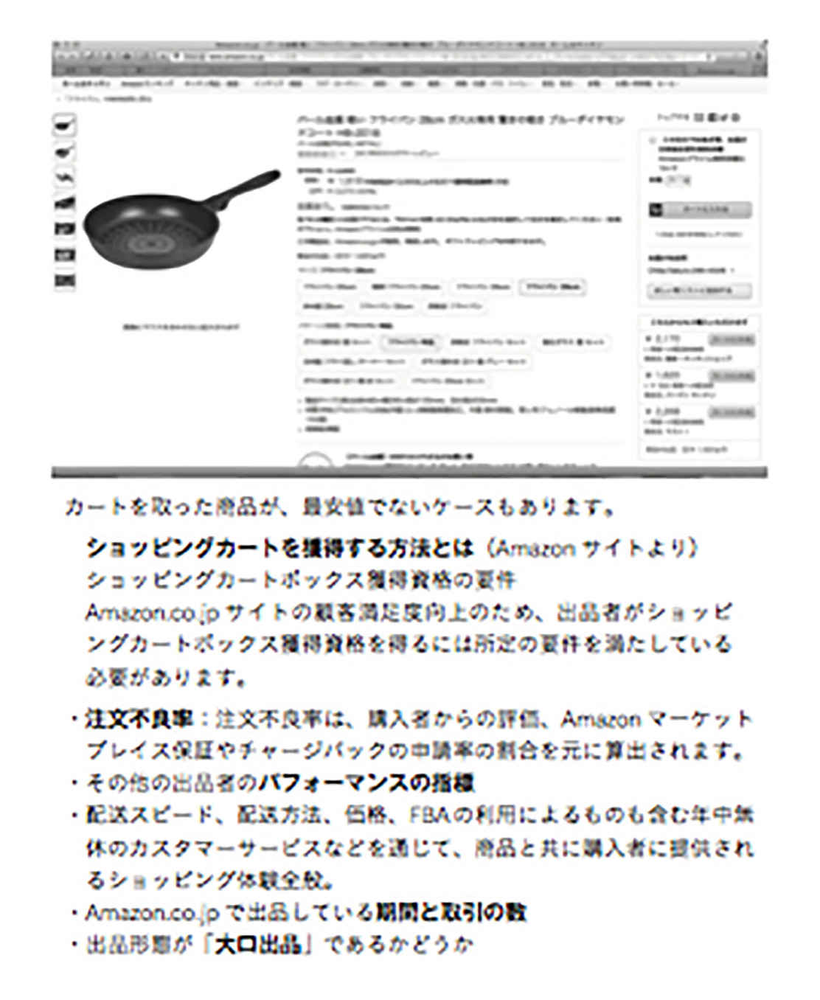
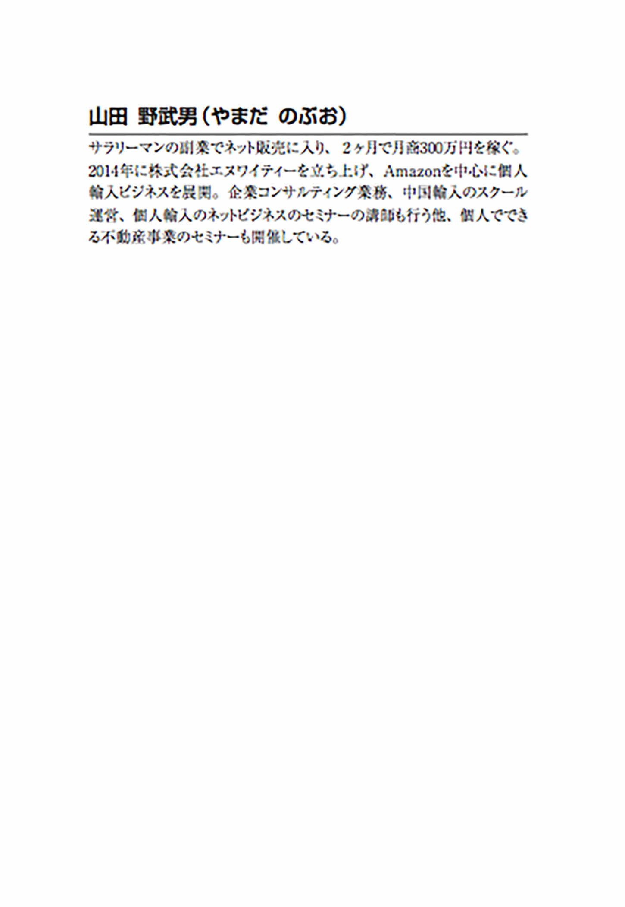

| Amazon中国輸入効率化マニュアル（特別公開版） | |
| 山田野武男 | |
| Sunrise Publishing (2017) | |
山田野武男
Ｑ１ 中国個人輸入に興味はあるけど、私、中国語がまったくできないんですけど......
大丈夫！
山田メソッドなら日本語だけでＯＫです！
日本語堪能な中国在住の中国人が、あなたの個人輸入を支える心強いビジネスパートナーです。
あなたは日本語だけで中国個人輸入のビジネスをすることが可能です。
そんな、中国人パートナーをどうやって見つけるの？と不思議に思われるでしょうが、そこに山田メソッドだけの秘密があるのです。
Ｑ２ 中国個人輸入に興味はあるけど、儲かる商品をリサーチできるかが不安......
大丈夫！
山田メソッドならリサーチは、中国人パートナーにおまかせ！
山田メソッドの強みは、中国人パートナーにリサーチをおまかせできること。
あなた自身がリサーチをする必要はまったくありません。
あなたは、定期的に送られてくる商品リストのなかから、選んで注文するだけ。
中国人パートナーが現地でしっかりと検品してくれるから、商品の品質も確かです。
Ｑ３ 中国個人輸入に興味はあるけど...... 会ったこともない中国人パートナーを信用できる？
大丈夫！
中国人パートナーとの絆を深めるコツがあります！
たとえば、あなたの親友と呼べる人の顔を思い浮かべてください。
その人とは、出会ってすぐに親しくなりましたか？
いろいろなことを話して、ともに経験し、絆が強くなったのではないですか？
山田メソッドには、中国人パートナーとのコミュニケーションを密にする方法があります。
Amazonで「出品用アカウント」を登録
◎ポイント ...「購入用アカウント」と「出品用アカウント」は別のもの
◎ポイント ...「大口出品」と「小口出品」とに分かれているが、「大口出品」を選ぶ
◎ポイント ... 売り上げ金の振込先としてAmazonペイメントに登録
日本語堪能な中国人パートナーを探す
◎ポイント ...「@SOHO」や「トレードチャイナ」などのSOHO募集サイトに募集条件を書き込む
中国人パートナーに、商品リサーチを送ってもらう
◎ポイント ... 毎週、決まった曜日にリサーチメールを送ってもらうルールにする
商品リサーチをモノレートで確認後、中国人パートナーに商品を依頼
中国人パートナーに見積りをもらい、入金
◎ポイント ... 中国への入金はＳＢＩレミットがおすすめ
商品が手元に到着したら、Amazonに商品を出品
◎ポイント ... 初めて販売する商品は、２個ずつ「テスト販売」をする。２回目以降は、中国人パートナーからAmazonの「ＦＢＡ倉庫」へ直送してもらう。
この本を手にしてくださったみなさんに、まずは言っておきたいことがあります。この本にあるのは、１億円をマッハのスピードで稼ぐ方法や、何もしないで銀行口座の残高が１兆円になるというような夢のビジネスモデルではありません。
そういう「億」や「兆」の夢を抱いている方にしてみれば、物足りなく感じるかもしれません。
私のビジネスモデルはそんなにすごいものじゃないです。年商が５０００万円、純利益が30
％
だとして１５００万円くらいのものです。
ただ、まったく時間を取られることなく、副業でそれだけの金額を手にすることができれば、もちろん生活に余裕ができるだろうし、嬉しいと思いませんか？夢を見ることを煽るのではなく、着実な方法を読者に伝えたい。そして山田メソッドを知り、誰もが自分の望む人生を歩んでほしい。それだけが著者である私の願いです。
この本は、ネット転売ビジネスのなかでも、Amazonに特化したものです。それも中国から中国現地の商品を、信頼のおける中国人パートナーの協力を得て仕入れ、日本で転売するビジネスです。
ただ、中国人パートナーとのビジネスというと、どうしても不安に感じるのが、言葉の問題でしょう。
大丈夫！すべて日本語でＯＫです。
山田メソッドの特徴は、本当に簡単なところです。難しいところは全部取り除いた ビジネスモデルです。
要は私自身が転売ビジネスの初心者だった時に、どうやって結果が出せるのだろうか、自分が成功するためだけに考えたビジネスモデルなのです。私は英語ができないし、もちろん中国語もできない。中国人との接点もなかった......。
そういう時に、じゃあどうやってやろうか？と自分が生き残るために考え出したのが、山田メソッドのビジネスモデルです。
無駄な要素はそぎ落としていき、あとは目の前にいるパートナーを信用することで、成果がどんどん出てきたのです。
私について、もう少しお話しさせてください。
私は、２０１２年まで、サラリーマンでした。サラリーマン時代を思い出すと、手にする給料に対する不満以上に、自分の時間をすべて会社に奪われていたという辛い記憶があります。
朝７時に起きて、帰ってくるのは夜の11
時過ぎ。子どもが生まれたばかりの頃でしたが、話しかけることも、触れ合う時間も皆無で、寝顔を見るくらいが心の癒しでした。子どもが生まれて初めてのクリスマスを、私はとても楽しみにしていました。といっても、何も特別なことをしたいと思っていたわけではありません。
ケーキとチキンでも買い、妻と他愛ない話をして、子どもの笑顔を見ながら過ごしたいと願っただけ......。
けれど、そんなはかない夢さえも叶いませんでした。その夜も残業となり、帰宅は深夜でした。「パパのことを待ってたみたいよ」と、泣き疲れた子どもの目元をそっと 触りながら妻が言いました。その時、しみじみ感じたのが次のようなことでした。
「俺の人生って、一体なんなんだろう？自分の大切な家族の時間を、自分自身の家族との時間をただ会社に搾取されていくだけ......」〝社畜〞という言葉が、思わず心に浮かびました。
その後、紆余曲折があり、私はAmazonを用いた「中国個人輸入ビジネス」にたどりつきました。そうして、自分の時間とお金を手にしたのです。
これから、山田メソッドをやってみようと思う方は、「お小遣いを少しでも増やしたい」「生活を楽にしたい」「儲けて家を建てたい」など、きっかけはいろいろでしょう。自分自身も稼ぎながら、読者のみなさんに私が知り得るすべての知識やノウハウを山田メソッドとして注ぎ込みたい！多くの人に今より幸せな生活を提供するのが私の使命だと思っています。
ネット転売初心者の方はもちろん、あらゆるネットビジネスに挑戦してみたけれどうまくいかなかったという、ネットビジネス全般に疲弊した人たちにも、この本の内容についてはきっと満足してもらえると自負しています。
私がこの本で伝えたかったのは、「日本語だけでできる中国輸入」とその「自動化」です。以降にこの本の内容を簡単に説明しましょう。
ＰＡＲＴ１では、Amazonを利用するメリットを読み解いていきます。実際にAmazon出品アカウントを作成し、事前準備を進めましょう。
ＰＡＲＴ２では、中国語はまったく話せない私が、なぜ中国在住の中国人たちとビジネスパートナーとしての絆を構築できたのか、また中国人パートナーの見つけ方についても具体的に触れていきます。
ＰＡＲＴ３では、気になるお金の流れを中心に、ＰＡＲＴ４では、Amazon中国個人輸入の肝である、儲かるリサーチリストのコツを中心に解説していきます。
ＰＡＲＴ５では山田メソッド独自の仕組みに注目しつつ、リピート販売までの手順を示しています。そしてＰＡＲＴ６では、中国人パートナーとのつき合い方と、先輩方の生の声をお聞かせします。ぜひ、参考にしてください。
この本を手にしたあなたが、今この時から、自分の時間と、人生を豊かにするためのお金を手にすることができたら、著者としてこんな幸せなことはありません。
２０１７年５月 山田野武男
ここでは、Amazonを利用するメリットを読み解いていきましょう。
個人輸入をする上でのAmazon利用の素晴しさを中心に、他のＥＣサイトの特徴についても理解を深めていきます。
実際にAmazon出品アカウントを作成し、事前準備を進めましょう。
Amazon中国個人輸入とは、ショッピングサイトAmazonを利用した個人輸入のことです。〝中国製品を中国で仕入れて、日本のAmazonで売る〞というビジネスです。
この本を手に取られたほとんどの方は、Amazonのことをご存知でしょう。国内大手のショッピングサイトで、斬新なサービスを次々と導入しています。
ただ、Amazon以外にも、Yahoo!オークション、Yahoo!ショッピング、楽天、イーべイ(世界的なオークションサイト)など、多くのショッピングサイトがあります。
では、なぜAmazonなのか。
まずは、Amazon以外の大手ＥＣサイト(ショッピングサイト)の楽天とYahoo!オークション(以降、ヤフオク)、Yahoo!ショッピングの特徴を見ながら、中国個人輸入でAmazonを使うメリットを解説していきましょう。
楽天のメリットは、日本における集客率の高さです。特に50
代以上のシニア層の支持が他のショッピングサイトにくらべ強いのが、楽天の特徴です。
楽天の魅力は、販売者が独自に作成した商品ページの華やかさでしょう。ただ、個人の販売者が商品ページ作成で大手と競い合うとなると、時間やセンス、費用などが非常に重くのしかかってきます。
出品サービスの利用料金を見てみると、Amazonは大口取引の月額４９００円。楽天は、ネットショップ運営初心者向けの「がんばれ！ プラン」で、１９５００円です(２０１７年３月現在)。
一方、ヤフオクのメリットはなんといっても、月額使用料が０円の手軽さです。出品ページは自分で作る必要がありますが、１点からの出品も容易です。出品は無料で、落札価格から手数料が差し引かれるシステムなので、初心者向きです。ただ、購入者 との直接のやり取りには多くの時間がかかり、トラブルが起こった場合には煩雑な作業がつきまといます。Yahoo!ショッピングもヤフオクと同様、月額使用料が０円は魅力的です。がAmazonや楽天にくらべ市場規模が小さいのがデメリットです。
個人輸入を行なう上でAmazonのメリットとはなんでしょう？ ５つのメリットをまとめてみました。
①
購入者からの決済はAmazonが代行
Yahoo!オークションやイーベイの場合は、連絡先、振込先などを購入者と直接やり取りするため、トラブルとなる可能性もあります。Amazonなら、あなたの代わりに購入者から商品代金を集金し、あなたの口座に振り込んでくれるので安心です。
②
クレーム対応とカスタマーサービス
出品者と購入者が直接やり取りをする場合は、クレーム対応などで思わぬ時間を取られたりします。またイーベイの場合は、海外からの購入者がほとんどなのでそのやり取りの多くは英語での対応を求められ、より煩雑です。Amazonなら、クレーム対応の一次受けをしてくれることが大きな魅力。また、カスタマーサービスの対応も迅速で、メールなら問い合わせ後24
時間以内に対応してもらえます。
③
商品ページ作成の手間入らず
多くのショッピングサイトでは、商品を販売する際にその商品の説明文や商品画像を使っての販売ページが必要になります。Amazonなら、既に出品されている商品と同じものを出品する場合は、新規の販売ぺージは不要です。その商品ページに自分の出品商品のリンクを貼るだけで販売できるので簡単です。
④
商品数が少なくても販売可能
たとえ１個からでも、ヤフオク同様の販売しやすさがAmazonの魅力。１アイテムを１００個仕入れて売り切るよりも、１００アイテムを１個ずつ仕入れて売り切るほうが簡単でリスクも少ないというビジネスを実現しやすいのがAmazonです。
⑤
倉庫納入から出荷まで楽々のＦＢＡ
そして、これこそがAmazon最大のメリットなのですが、ＦＢＡというAmazonが提供している販売支援サービスの存在があります。ＦＢＡについては、次のページでもっと詳しく説明していきましょう。
ＦＢＡとは、「フルフィルメント・by・Amazon」の略で、Amazonが提供している 販売支援サービスのことです。ＦＢＡを使うには、「小口出品」ではなく「大口出品」でのアカウント登録が必要です。
Amazonのサイトには次のような説明文が記載されています。
フルフィルメント by Amazon の特長
フルフィルメント by Amazon(ＦＢＡ)は、商品の保管から注文処理・出荷・ 配送・返品に関するカスタマーサービスまでを提供するだけでなく、Amazon.co.jpでの販売力を強化し、売上拡大を支援するサービスです。１商品１点から利用できるので、既にAmazonで売れている商品や、売れると思われる商品からお試しいただき、販売実績をみて商品を拡大することも可能です。
あなたのお客様から注文が入った場合、商品の受注、梱包、発送、入金、在庫管理、クレーム対応など、すべての発送に関する作業を代行、管理してくれる、それこそがＦＢＡと呼ばれるAmazon独自の運営体制です。
ＦＢＡの流れを簡単に言うと、次のようになります。販売者は仕入れた商品を登録した後、Amazonの倉庫に発送→Amazonが倉庫に保管→購入者が現われると、Amazonが梱包し発送します。
【ＦＢＡの流れ】
仕入れた商品をAmazonに納品する
⇩
納品した商品をAmazonが保管・管理する
⇩
商品が購入される
⇩
Amazonが商品を梱包し購入者へ発送
AmazonのＦＢＡは、個人輸入のパラダイムシフトといってもよいくらいの、画期的なシステムです。ＦＢＡが誕生するまで、個人のネット転売者には〝在庫の置き場所〞と〝梱包・配送作業に費やすわずらわしい時間〞という２つの悩みがありました。
たとえば自宅に多くの在庫を抱えるとなると、商品の段ボール箱にあふれた部屋で、今晩寝る場所がない！などということにもなりかねません。また、商品が大量となると梱包や発送作業に、多くの手間と時間を費やさなければならなくなります。
ＦＢＡが、場所を取る商品の保管から、わずらわしい梱包発送作業までの一切を代行してくれるおかげで、個人での大量販売をスムーズに行なうことが可能になりました。売れる品であれば、いくつでも仕入れてＦＢＡに収めてしまえばいいのです。こ のＦＢＡのシステムこそが、Amazonをおすすめするいちばんの理由です。
ＦＢＡの手数料は、次ページの表にあるように物や重さで違ってきますが、全体的に既存の配送料よりも割安なのがわかります。また、表にあるメディアとは、本やＣＤ、ＤＶＤなどの出版物のことです。ぜひ、参考にしてみてください。

さあ、ここまでで個人輸入におけるAmazon利用のメリットが理解できたかと思います。では、実際にAmazonのアカウント登録をやってみましょう。
普段Amazonで買い物をしている人も多いでしょうが、購入する際のアカウントと出品用アカウントとは別のものです。混同しないように注意してください。Amazonの出品者として商品を販売するためには、出品用アカウントを取らなくてはいけません。
アカウント登録の際には、「大口出品」と「小口出品」とに分かれていますが、ＦＢＡを利用するためには必ず「大口出品」を選んでください。
アカウント取得の際には、あなたのクレジットカード情報と銀行口座も登録することになりますので準備しておきましょう。



出品用アカウントには、メールアドレスの登録が必要です。もちろん、普段使っているアドレスでもよいのですが、できれば新規で今回の個人輸入ビジネス専用のアドレスを取得するのがおすすめです。
出品用アカウントを登録することによって、受信メールの数が格段に増えると思われます。たとえば、ＦＢＡに商品を登録したり、商品を納品したりすると、Amazonから確認のメールが届きます。同じくAmazonから、週に数回のビジネスサポートのメールも届きます。
普段使っているアドレス１本だけだと、ついつい大事なビジネスメールを見逃すことにもなりかねません。
あるいは受信用に専用のフォルダを作るのもよいのですが、かえってメールの管理に手間取る可能性が高くなりそうです。より簡単で使い勝手がいいのは新規アドレスの作成です。
おすすめは、Gmail新アカウントの取得です。
ご存知の方も多いと思いますが、Gmailとは、Googleが無料で提供しているメールサービスです。Gmailだと、１人で複数のアドレスを簡単に取得することが可能です。たとえば用途によってアドレスを変えると管理がよりしやすくなるでしょう。Gmailは、「Googleアカウントの作成」というページから簡単に作成することが可能です。ぜひ、参考にしてみてください。
また、使用するクレジットカードを選ぶときにも、注意すべきポイントがあります。クレジットカードの年会費が無料のもので充分ですが、商品の仕入れの際にも使うので、利用限度額がなるべく大きいものを選んでください。クレジットカードのポイン トもチェックして、賢く選んでいきましょう。
Amazonの出品用アカウントには「大口取引」と「小口取引」の２種類があります。出品用アカウントを取得するときには、「大口取引」か「小口取引」かのどちらかを選択しなければいけません。
この本を読み、山田メソッドでAmazonのＦＢＡを用いてビジネスをする方は、必ず「大口取引」を選択してください。なぜなら、前にも書いたように、大口取引を選ばなければ、AmazonのＦＢＡを用いることができないからです。
小口出品の場合、商品１点につき１００円の基本成約料がかかります。一方、大口出品でアカウントを作成すると、月額４９００円の基本料金がかかってしまいます。
ひと月に、50
点未満の商品取引の場合は、小口出品のほうが割安かと思われるかもしれません。が、大口出品のメリットはなんといってもＦＢＡを利用できることです。 Amazonのサイトには大口出品と小口出品の特徴が以下のように書かれています。
(大口出品)
売上を最大化したい人におすすめ
・オリジナル商品もAmazonに既にある商品も出品可能
・出品数やカテゴリーが無制限(一部制限あり)
・大量の商品もまとめて出品登録が可能
・データ分析レポートが利用可能
(小口出品)
小規模で販売したい人におすすめ
・Amazonに既にある商品のみ出品可能
・商品を出品するには１商品ごとに登録が必要
そして、大口出品を選べばカートを取りやすいというメリットがあります。
Amazonで商品を検索すると、検索ワードに関係する商品がいくつか検索されます。たとえば、「バケツ」と検索するといくつかのバケツが並んだ画面が開きます。そのうちの１つを選ぶと「カートに入れる」と書かれたボタンが表示された出品者のページが表示されます。このように、写真が大きく表示されたページで大々的に、商品を表示されることを「カートを取る」と言います。
次のページに画像を掲載しているので、確認してみましょう。同じ商品を出品しているのにもかかわらず、カートが取れない出品者の商品情報は、ページの右側にある「こちらからもご購入いただけます」から案内されます。ただし、カートを取れなかっ た商品については、「カートに入れる」ボタンと価格と出品者(ショップ名)しか表示されません。

私の実績からいうと、「カートを取れた商品」は「カートを取れなかった商品」の３倍以上は売れています。
出品者の誰もが、カートを取りたいのは至極当然のことなのですが、誰の商品がカートを取るのかはAmazon独自の判断によります。
Amazonのサイトには「ショッピングカートボックス獲得資格」について、以下のように記載されています。
「ショッピングカートボックス獲得資格」は、一定のパフォーマンスを到達している大口出品者に付与される資格です。
この資格の付与に伴い、追加で手数料が発生することはありませんが、出品者はショッピングカートボックス獲得資格を維持するためには一定のパフォーマンスを維持する必要があります。
「カートを取る」ために、商品の先着順は関係ありません。「最安値であること」「大口出品者であること」「商品レビューの評価が高いこと」などの要素をふまえて、Amazonがほかの出品者と比較評価して決定しているようですが、その詳細はよく知らされていません。
カートを取った商品の次に売れやすいのは、商品ページの右側にある「こちらからもご購入できます」から案内される商品です。商品ページによって異なりますが、大体においてここには３商品が紹介されています。
次のページのフライパンの場合、カートを取った出品者の商品より、価格が安い商品が入っています。価格が最安値なのにカートが取れなかった原因として、出品者が大口出品者でないこと、出品者のレビュー評価があまり高くないことなどが考えられます。
ただ、くれぐれもカートを取りたいがために、出品者同士の最安値競争に参入しない注意が必要です。
〝売れたけれども儲けが出ない〞状況は、あなたのビジネスへのマインドを消耗させるだけですから。「儲けを出す」という、ビジネスの原点に立ち返ることも時には必要です。

★
Amazonの大きなメリットは、ＦＢＡ
★
ＦＢＡで、保管や梱包発送はAmazonにおまかせ
★
ＦＢＡを使うためには、大口出品を選択
★
カートを取ると、売れやすくなる
★
カートを取るためにも、大口出品を選択
最後のパートでは、私と中国人パートナーとのつき合い方、彼らがどんなに自分のリサーチや買い付けに誇りと責任感を持って取り組んでいるかを伝えたいと思います。
また、私の生徒さんたちのインタビューや私との鼎談も入れています。
どうか、山田メソッドの神髄を、彼らの生の声で感じ取ってください。
中国人パートナーとは、差し迫ったビジネスの用件がないときもスカイプでほぼ毎日話すようにしています。話すことと言えば、他愛ない世間話。中国は広く、地域によって気候も習慣も違うようです。「そっちは泳げるの？」とか、「春節にはどっか行くの？」とか、気軽な世間話のようなものだと考えてください。
たとえば、あなたが自分の親しい友人と交わす会話を思い出してみてください。「トランプ大統領になって、日本はどうなると思う？」なんてことを、あんまり熱く話しこんだりはしないですよね。政治的な背景は国それぞれです。互いが傷つくことがないよう、そういった話題には触れないことが賢明です。
大切なことは、ほぼ毎日、互いの肉声で話すこと。肉声で普通にコミュニケーションを交わすことで、ビジネスパートナーとしての絆も深まっていきます。そうした世間話のついでに、ビジネスの話が出ることもあります。
たとえば、スカイプでの会話中に「最近、いい商品あるの？」と聞くと、中国人パートナーから、「今から市場にお出かけするから、なんかほしいものある?」というような返事がくることも。「面白いものがあったら教えてよ」と言うと、市場で見つけた商品を写メで撮って送ってくれることも少なくありません。
中国人パートナーが地元の市場で見つけてきてくれた、粒が小さな水晶などは、日本で買うと結構高価です。それが、１ｋｇ７００円くらいで買えたりします。中国人パートナーと信頼感をもってつき合うと、そういうネットに出回らない情報も教えてくれるのです。
「今、こういうのを探しているんだけど、ネットにはないんだよ」と相談すると、「じゃ、僕がこれから市場で探してくるよ」というように、地元をくまなく探してきてくれることもあります。現地に住んでいることもあるでしょうが、とにかくフットワークが軽い。ただ、こんなふうに一生懸命やってくれるのも、彼らが私のことを「ビジネスパートナー」だと強く認めてくれているからです。
山田メソッドは、私が作り上げたというよりも彼ら中国人パートナーとともにでき上がってきたメソッドです。疑問が出る度に「これできるの？」「これもできるの？」と中国人パートナーに聞くだけで、その都度、彼らが勉強して調べてくれました。
たとえば、日本のAmazonのＦＢＡに入れられる段ボール箱のサイズが決まっていることを、中国人パートナーから教えられたことがあります。国内から送る場合ならサイズを超えても、運送会社から自分のところに返ってくるだけですが、海外からだと、また通関に戻って、通関から私のほうに連絡があってというふうに、すごく面倒なことになってしまいます。そういった日本のＦＢＡに合わせたサイズの段ボールで送るというルールを、私は中国人パートナーから教わったのです。
もちろん、いろいろな商品を扱いますから、ひとつひとつについて「中国から海外に出していいものか」「海外から日本に入れていいものか」も違います。そういったことも、中国人パートナーが調べてくれます。律儀なパートナーの場合は、日本の特許庁のホームページまで見て調べてくれます。そうして「これ申請出ているからダメだよ」「これ申請出ているけどどうする?」というように教えてくれます。
自分でリサーチした商品を、責任を持って仕入れてくれる。これこそが、中国人パートナーの強みです。責任を持って仕入れてくれるので、パートナーの手元に来たときに不良品だったり、Amazonと違うものだったりする場合は、中国の購入先へと返品までしてくれます。そこが、自分でリサーチして、中国の代行業者にこれを買い付けてもらうノウハウとは、圧倒的に違うところです。
パートナーシップを組んでウインウインの関係になるために、中国人パートナーとしても一人一人の日本人に成長してもらいたいと思っています。そうすれば、次にもっと大きなお金になって返ってくるということを、私がずっと教え続けているので彼らはわかっています。今だけじゃない。たとえ10
万円の仕入れから始まっても、ちゃんとサポートすれば１年後には、１００万円に伸びる。それがわかっていれば、しっかりサポートしてくれます。
こうして、日本人の生徒さんにも山田メソッドのノウハウが定着すれば、ずっとそのビジネスを定着させることができると確信しています。
言われたことを素直にやれば結果が出ます
■マッキントッシュさん (茨城県在住 32
歳 男性 起業家)の場合
》Amazon中国個人輸入の経験年数(月数)と総売り上げ
経験年数は８ヶ月、月商３００万円、総売り上げは正確には分かりませんが、約１０００万円です。
》山田メソッドのコンサルティングを受けたきっかけ
専属会計士からの紹介です。
》実際にAmazon中国個人輸入をやってみた感想、嬉しかったこと
嬉しかったことは倍々ゲームのように売り上げが伸びていくこと!
》初めての中国輸入は難しかったですか？ 簡単ですか？
山田先生が完璧なまでのシステムを作り、すべて余すことなく提供してくれたので、想像以上に簡単だった。今までやってきたビジネスの中で唯一、難しいと思ったことが一度もなく、今に至っています。
》送金や困った事はなかったですか?
一気に１００万円以上の送金をして、マネーロンダリングの疑いをかけられて困ったことはありましたが、送金業者に説明したら納得してくれました。
》中国から商品はすぐに届きましたか?
毎回15
日前後で届きます。
》Amazonに商品を納めて何日くらいで売れましたか？
納品してから数時間で売れました。
》初めて中国人パートナーと話した時の印象はいかがでしたか？
日本語がうまいと思いました。
》中国人パートナーがいない場合、このビジネスは出来ないものですか？
難しいと思います。
》山田の教え方は親切ですか？
よい意味で山田先生は過剰なほど親切です。楽して稼げるビジネスが現実にあると実感しました。
》今後の目標
最終的には、月商１０００万円超えで、年商１億円です。今年は、月商４００万円超えで、年商４０００万円を目指してます。
》平日と休日のざっくりとしたタイムスケジュール
中国輸入の作業時間は、不定期なのでわかりませんが、１日のタイムスケジュールはだいたい以下の通りです。
朝10
時〜12
時はジムでトレーニング
12
時〜17
時はパソコンを使ったビジネス
18
時〜21
時は家族と団らんしながら食事とお風呂
21
時〜23
時はＳＮＳのチェックと書き込み
》最後に、山田式中国輸入はあなたにとってどんなものですか?
やれば誰でも結果が出せる魔法のようなビジネスモデル。
》これから、中国輸入ビジネスを考えている方へメッセージ
山田先生に言われたことを、素直にやれば誰でも結果が出ます。
パートナーの商品で売れなかったものは１個もない
■ムクトさんの場合 (千葉県在住 38
歳 男性 歯科技工士)
》Amazon中国個人輸入の経験年数(月数)と総売り上げ
２０１６年の１年間、平均して月商１００万円。
》山田メソッドのコンサルタントを受けたきっかけ
海外仕入れツアーで出会いました。山田先生のことは全く知らず、山田塾に入ってから山田先生の書籍を購入しました。
》実際に Amazon中国個人輸入をやってみた感想、嬉しかったこと
こんなに簡単に自分の好きな時間に副業ができるとは思っていませんでした。
》初めての中国輸入は難しかったですか？ 簡単ですか？
簡単すぎて、今の時代は個人で貿易ができる時代だと痛感しました。
》送金や困った事はなかったですか？
全くありません。わからないことはいつでも山田先生に質問でき解決できます。
》中国から商品はすぐに届きましたか？
すぐです。期間が明確ではありませんが、おおよそ２週間から３週間後には問題なく届きます。
》Amazonに商品を納めて何日くらいで売れましたか？
商品をアマゾン倉庫に納品してから３日で売れました。
》中国人パートナーのリサーチリスト(商品リスト)は本当に儲かるのですか？
はい。儲かるものしか記載されていません。
》初めて中国人パートナーと話した時の印象はいかがでしたか？
日本の企業で７年間働いていたということで言葉も丁寧で優しい印象でした。
》ほかのコンサルタント経験がおありなら、違い、よいところ
私は山田先生に出会うまでは６つの物販系塾に加入していました。総額３００万円以上を投資して中国輸入を学びましたが結果が出たのは山田塾だけでした。収入が増えたので家族旅行に行く時間が増えたり、戸建て住宅をワンランク上の物件を探せるようになりました。今年は家でも購入しようかと考えています。
》平日と休日のざっくりとしたタイムスケジュール
たとえば、
朝９時〜19
時 本業の歯科技工士の営業
20
時〜21
時 テレビを見る。その後、30
分程度中国人パートナーと話して、仕入れリストから選ぶだけ。メール送信してあとはおまかせ。
これで月商１００万円になります。
》最後に、山田式中国輸入はあなたにとってどんなものですか？
ひと言だけです。
人生を変えてくれたノウハウです。
全くの素人の私がここまでできるようになりました
■Ｎ・Ａさんの場合 (大阪府在住 45
歳 女性 パート)
》Amazon 中国個人輸入の経験年数(月数)と総売り上げ
５ヶ月、２５０万円(５ヶ月の総売り上げ金額)です。ちなみに、３月の１ヶ月で約90
万円の売り上げをつくりました。
》山田のコンサルタントを受けたきっかけ
著書『週４時間で月50
万稼ぐAmazon中国輸入 日本語だけでできる驚異の山田メソッド』を読んで。
》実際にAmazon中国個人輸入をやってみた感想、嬉しかったこと
仕入れた商品が初めて売れたときはうれしかったです。
》初めての中国輸入は難しかったですか？ 簡単ですか？
ビジネスモデルが出来上がっていて、あとは実行するだけなので難しくはないです。
》送金や困った事はなかったですか？
送金で困ったことは一度もありません。
》中国から商品はすぐに届きましたか？
２週間ほどで自宅に送られてきました。
》Amazonに商品を納めて何日くらいで売れましたか？
ＦＢＡに収めた初日に売れました。２０００円ぐらいの商品１つです。
》初めて中国人パートナーと話した時の印象はいかがでしたか？
日本の方のように日本語を話しますし、誠実な印象でした。
》中国人パートナーは信頼できる方ですか？
山田先生のご紹介ですから、もちろん全幅の信頼をおいています。
》本当に日本語だけで意思が伝わるのですか？
はい。山田先生のご紹介もあるので、日本語は間違いなく堪能な方です。
》本当に難しい部分はないですか？
ありません。初心者でも不安な点はありません。誰でもできると思います。
》多くの時間を必要としませんか？
人によるかと思います。私は休みの日に集中して、ずっとパソコンとにらめっこしています。
》今後の目標
３ヶ月後、月商１００万になりたい。
》平日と休日のざっくりとしたタイムスケジュール
平日は大体こんな感じです。
朝８時〜17
時 出勤(パート)
17
時〜18
時 帰宅、メール確認
18
時〜21
時 家事
21
時〜 メール確認
》山田式中国輸入はあなたにとってどんなものですか?
この出会いがなければ、今の一歩はなかったでしょう。
》これから、中国輸入ビジネスを考えている方へメッセージ
全くの素人の私がここまでできるようになりました。山田先生は本当に誠実で優しい方ですので、安心して一歩を踏み出す勇気をもってください。
65
歳！ わくわくドキドキする気持ちで続けられる
■Ｔ・Ａさんの場合 (東京都在住 65
歳 男性 会社員)
》Amazon 中国個人輸入の経験年数(月数)と総売り上げ
２０１６年１月下旬に初めて出品(ＦＢＡ納品)しました。それから１年３ヶ月目の２０１７年３月16
日現在、注文商品の売上は、約７９０万円です。
》山田先生のコンサルタントを受けたきっかけ
山田先生の書籍です。何かできそうな気がしました。で、先生が会ってくれるのであれば、直接お話を聞きたいと思いました。
》実際にAmazon中国個人輸入をやってみた感想、嬉しかったこと
ネット販売中国輸入未経験の私が、１ヶ月余りで利益が出始めた事実に驚きました。嬉しかったことは、やはり初めて売れた時でしょう。納品後、間もなくして売れたものですから。しばらくしてまた売れて、また売れて、在庫がなくなって追加注文。この時のことは、喜びの記憶として忘れられません。
》初めての中国輸入は難しかったですか？ 簡単ですか？
今、続けられているのも、難しくなかったからだと思います。ストレスがほとんどなく楽しく取り組めた。だから続けてこられた。そういうことだと思います。このビジネスを始めて感じることは、不慣れな世界に入る苦しみ以上のわくわくする気持ち。これがあるからこそ、続けられます。
》Amazonに商品を納めて何日くらいで売れましたか？
昨年１月17
日の夜、郵便局本局に商品を運びました。１月18
日発送です。１月21
日に初めて「ＦＢＡ注文の商品発送のお知らせ」メールをスマホで受信。感激しました。
》中国人パートナーは信頼できる方ですか？
はい。非常に信頼できる感じの人でした。山田先生がすでにいっしょにビジネスをしている方だったので安心でした。
》難しい部分はないですか？
ネット販売未経験の初心者ですが、チャットで山田先生にいろいろ質問したり、Amazonのテクニカルサポートに問い合わせたりすることで、難しくは感じませんでした。
》教え方は親切ですか?
はい。山田先生は、時間がない人にはない人なりの取り組み方を許容してくれるので、ありがたかったです。
この世界で成功している人は、ネット販売を経験していたり、輸出入を経験していたり、ＰＣに通じていたりという人が少なくありませんが、私は本当にど素人でした。でも、毎日ドキドキしながら、利益を上げつつ続けることができています。
「山田メソッドに出会わなければ、今の自分はいないと思う」
山田野武男(著者)×マッキントッシュさん(山田塾生徒)×ムクトさん(山田塾生徒)
今日は僕が教えているコンサルタント生のなかでも、特に興味深い２人の生徒に来てもらい、ざっくばらんにいろいろな話をうかがいました。
多くのインターネットビジネスやコンサルタントの塾、スクールを経験されたお二人が、なぜ山田メソッドを選んだのか。
山田メソッドに出会うまでの２人が日々の暮らしのなかで、どんなふうに自分の生き方を模索していたかを読むことで、力が湧いてくると思います。
２人が山田メソッドの学びで気づいた"個人輸入の喜び"とは、どんなものだったのでしょう。
*２人のプロフィールは、コンサルタント生のインタビューページにくわしく掲載しています。
山田:僕の生徒のなかでも、すごく興味深い２人に今日は来てもらいました。遠慮なく、山田メソッドのいいとこ、悪いとこ全部を聞かしてほしいんだよね。
マッキントッシュ、ムクト:はい！！
山田:なんか、すごく元気で怖いな(笑)。まず、マッキントッシュをなんで今日呼んだかというと、僕のコンサルタントで結果を出している生徒さんはすごくたくさんいるんだけど、マッキントッシュはその結果を出すまでが、すごく早かった！ マッキントッシュは比較的新しい生徒さんで、半年くらい前までは中国輸入について全く知らなかったんだよね。
マッキントッシュ:そうですね。山田さんとは去年の７月に初めて飲み会でお会いして、それからです。で、８月くらいからやり始めたんですけど。
山田:マッキントッシュの場合、中国輸入に対しての予備知識があんまりなかったから考え方とか学び方が非常に新鮮ですれていないというか。それと、短期間なのに結果の出方が非常にしっかりとしていたのに驚かされましたね。
マッキントッシュ:僕の場合、インターネットビジネスにカテゴライズされているものは、物販も含めてほとんどやってきましたね。塾も、転売関係は山田先生が初めてでしたが、その前に３つ４つ行きましたね。
山田:Twitterがどうとか、アフェリエイトがどうだとか、YouTubeがどうだとか、全部、ひと通りやってきたんですよね？ あと......。
マッキントッシュ:本のせどり(競取り......同業者の中間に立って品物を取り次ぎ、その手数料を取ること。また、それを業とする人)とかですね。
山田:ひと通りやってきて、私のノウハウにたどり着いてくれて、結果、非常に気に入ってくれている、と(笑)。
マッキントッシュ:そうですね、本当にほかのビジネスと比べると、いいのかなと思うくらい簡単でとまどうくらいですね。僕は今、中国輸入で利益になったお金は、全部仕入れに使っているんですよ。カードの限度額がギリギリだから、先月とかは２７０万円買ってしまって、その決済期間２週間でどうにかしなくちゃいけなくて、大変な目にあっちゃったんですけど、結果的には２週間で１５０万円近く手元に来て、あとはリボルディング払いの期日を伸ばせて、返せたんでよかったですけど。まあ、残った分は基本的に突っこんでいるので(笑)。手元には残んないんですけど、実際は粗利でいうと１５０万円くらい残っているっていうことになります。
山田:これ重要なのは、マッキントッシュは中国輸入を始めて半年ちょっとしかたっていないのに、月の売り上げが３００万円たっているんですよ。半年で人生変わるんですよね。
マッキントッシュ:激動の半年でしたよね。
山田:普通の塾に半年入って、「やっぱし稼げませんでした」とか、「ローンだけ残りました」とかがありがちな話ですけど、リアルに稼げるんですよね。
マッキントッシュ:リアルな金額でいうと、２ヶ月目に10
万円くらいの売り上げが出て、３ヶ月目に50
万円、４ヶ月目に１００万円、で、１５０、２００と倍々ゲームみたいに増えたって感じですね。一応、１アカウントで月２００万円くらいの売り上げを立てるのが、ひとつの区切りかなって感じで見ているのですが、あとは次のアカウントを作ろうかなと。
山田:この売り方っていうのは、日本で売れていて、中国との価格差がある商品というのが前提です。それを輸入すると速攻売れる。だから、現金にすぐ替わるんです。ですから、マッキントッシュのやり方はこれからやりたいっていう人の非常に参考になると思いますね。現金を全然持たずして、クレジットカードの枠でやったんですよ。現金を全然持っていなくてもカードで切る。商品がすぐに売れて現金化されるから、カードの決済にも間に合うんですよ。
マッキントッシュ:今の僕は、大体８００くらい商品があったら、１ヶ月でそのうちの６００くらいが売れるイメージなんです。２００ずつくらい、ＦＢＡに在庫がたまってくるんですが、結構回転はよいほうなんじゃないかなと思います。
山田:インターネットビジネスでいちばん大切なのは、アクセスがあるかの見きわめです。「売れている」=「アクセスがいい」だから、「アクセスが集まっている商品」を、「アクセスが集まっている価格」で売ったら、売れるのは当たり前なんです。当たり前の話だけど、これをやっていない人があまりに多いんですよ。
マッキントッシュ:自分の売りたい値段で、売りたい商品とかを売ろうとしてしまいがち。
山田:アクセスが集まっていて、儲かる商品を見つけるのが大変なんです。要はアクセスが集まっているっていうのは、みんなが知っているということだから値崩れを起こしやすいんですよ。そこに必要なのは、優れた中国人パートナーのリサーチ力です。彼らが、アクセスが集まっていて、価格差がある商品をリアルタイムでリサーチしてくれるんですよね。
マッキントッシュ:僕は正直、最初はリサーチリストを見てもピンとこなかった。でも、中国人パートナーからのリサーチの表を、ただ単に精査しているうちに、売れるものは何かっていう感覚がわかってくるんです。そのリサーチリストを３ヶ月間、ずっとくれるってだけでも、山田先生の塾はすげーなと思いますね。
ムクト:そのリサーチリストは来年も再来年も使えるしね。寿命が長いリストって、本当にすごいですよね。
マッキントッシュ:もともと僕は、本のせどりをやっていました。週４くらいで本の仕入れに行って、あとの２日で梱包するというような感じで働いて、月に50
万円くらいの利益を出していたんです。
山田:それもすごいよね。
マッキントッシュ:ただ、そろそろ働きたくないなって思えてきたんですよね。
全員:えーーー(笑)。
ムクト:それって、会社勤めをしたくないってこと？
マッキントッシュ:いや、要するに、本のせどりって本を仕入れないと、当たり前なんだけど、利益にならないじゃないですか。本のせどりをやって、転売っていうのが儲かるのはわかったんですよ。単純に１００円で買って２００円で売れば、１００円儲かるじゃないですか。でも、自分が仕入れに動くしかないところに、限界を感じたというか。本のせどりは２年くらいやってきたんですが、なんか飽きてきたというのもあって。
ムクト:週に６日働いていたんだっけ？
マッキントッシュ:いや、そのうち２日はテレビ見ながら、梱包するだけです。気を使って仕事するというのは、仕入れの週４日だけでした。
ムクト:うらやましい!!
マッキントッシュ:僕は一応、会社を興していて、税理会計士を雇っているんですね。その税理士に「転売で稼ぐのがいちばん簡単だなって思った」って話をしたんですよ。なんでかっていうと、何も実体がない〝情報〞をなんとかするっていうのではなくて、本という実体を在庫として抱えて売るのが、いちばん簡単なビジネスだって思ったからです。特にお客さんである相手を説得する必要もなく、安ければ売れると。この転売の世界を極めたいなって話をしたら、たまたまその税理会計士が山田先生の税理会計士と同じで、そこから山田先生を紹介してもらって、「これだ！」みたいな。
山田:山田メソッドの中国個人輸入を始めて、正直どんな感じ？
マッキントッシュ:これは、先生の前でもよく言うのですが、先生の作ってくれた山田メソッドのおかげで、正直楽勝だなと思っています。
山田:それはよかった！ じゃ、お待たせしました。次はムクトさんの話を聞きたいんだけど、ムクトさんて歯科技工士の仕事をしているんだよね？
ムクト:はい。ま、いろいろとやっていますね。
山田:ムクトさんが、非常に興味深いと思うところは、インターネットビジネスの特に物販の主要な塾やスクールに学ばれてきた経験のある人だということ。多くのスクールに通われたけど、結局は私の山田メソッドを気に入ってくれたというのがとても興味深いなと思うんだけど、単刀直入にほかの塾と僕の教え方とどこが違うの？
ムクト:ひと言で言うと、ほかの塾が教えるのは〝儲かるノウハウ〞だけど、山田先生が教えてくれるのは、〝儲かる仕組み〞なんです。
山田:具体的に言うと？
ムクト:つまりは、〝仕組み〞を手に入れてしまうと何度もリピートできるけど、ほかの塾はノウハウだから〝やり方〞です。人によって、場合によって、やってもうまくいったりいかなかったりするでしょう。でも、山田メソッドは違う。山田メソッドの仕組みを手に入れたら、もうあとは〝成功へと流れる〞だけ。すでに仕組みができあがっているから、誰がいつやってもうまくいく。すごく、簡単で楽なんですよ。
マッキントッシュ:そう、山田先生が仕組みをくださるというか。
ムクト:みんな、山田メソッドでの中国輸入をやらないと損だと思いますね。だから、僕は山田先生から、〝仕組み〞を教えてもらったと思っていますね。仕組みが確立されているから、誰がやろうと成功しないわけがないんですよ。
山田:実際に生徒さんからの話を改めて聞くと、自分のやり方を教えてよかったなって実感しますね。正直、私自身は、マッキントッシュやムクトさんほどには、インターネットビジネスやほかの塾のことについて知らないんですよ。
ムクト:そりゃ、そうですよね。山田先生は、山田メソッドという〝仕組み〞の提供者だから、ほかのビジネスモデルなんて必要ないですよね。
山田:ただ、僕が自分のやり方、中国人をビジネスパートナーにして輸入しAmazonで売るという方法により強い自信を持てるようになったのは、マッキントッシュやムクトさんみたいなほかのビジネスを知っている生徒さんの存在があったからこそ。たとえば、「ほかのインターネットビジネスのすべてを知っているけれども、山田メソッドがいいですよ」って言ってくれるマッキントッシュがいたり、「いろいろな物販のビジネスを知っているけれども、山田メソッドの仕組みの完成度が素晴しい」って言ってくれるムクトさんがいたりすることが、このビジネスの成功再現性の強さを物語っていると思います。
マッキントッシュ:自分が作った仕組みだからこそ、自分ではわからないこともあると？
山田:そうなんですよ。確かにこの山田メソッドという仕組みを作ったのは私かもしれない。でも、私はただ単純に、自分が成功するためだけにこの山田メソッドを作っただけ。ほかのスクールのノウハウと比べたこともないから、この仕組みのクオリティの高さを、私は知らないんですよ。反対にマッキントッシュやムクトさんに、山田メソッドの素晴しさ、クオリティの高さを日々聞かされているような状態ですね(笑)。でも、僕はこの仕組みを売ろうと思って作ったわけじゃないから、そこがほかのコンサルタントの方たちと僕のやり方の大きな違いだとは思いますね。
ムクト:僕と先生の出会いというのは、独特で。出会ったのは、成田空港でした。これから、韓国へセミナー旅行に行くぞっていう時に、空港の待ち合い室でお会いしたのが初対面でしたね。去年の春先の頃だったから、まだ１年たっていないんですが、それまでは、山田先生のことは全く知りませんでした。
山田:そうそう、あの頃、僕に出版の話があって、ほかの先生からも学んでみようと思って。参加したのが「韓国セミナー旅行」だったよね。で、出版自体は、出版社が倒産しちゃったからその企画はなくなっちゃって、だったら「韓国セミナー旅行」も行かなくてよかったんだけどさ(笑)。でも、そしたらムクトさんとも出会えなかったし、有意義な旅だったよね。
ムクト:僕は最初、ネットビジネスで有名なＹという人の塾に入ったんです。２０１５年頃でしたから、結構最近ですね。きっかけは、当時の知り合いの歯科衛生士の人から「ムクトさん、私、成功しちゃったの。今、月収１００万円以上稼げるっていうビジネスを見つけたの、だから会社辞めるわ」って聞かされて、「あ、こんな40
過ぎの普通の女の人でも、月に１００万円稼げるんだったら、俺だともっと稼げる！」って思って、その塾を紹介してもらったんです。その塾に入るために50
万円かかりましたが、今って、そういうチャンスがある時代なんだと思ったんですね。
マッキントッシュ:すごい！ で、どうなったんですか？
ムクト:セミナーに行ったけど、僕からすると、「ものを売りつける」感がすごかった。たとえば、儲かるためにはこのツールが必要です、とか、このツールを買うにはこの塾に入るのが条件です、とか。で、50
万円払って塾に入ったけど、成果が出ない。僕だけじゃなくて、誰にもね。だったら、やり方変えて、このツールを買いましょう、あのツールを買いましょうって、どんどんどんどんお金もうけのためにセミナーを開いているというのがわかってきて......。で、ここは僕の居場所じゃないなって。
山田、マッキントッシュ:そういう塾やセミナーって、残念だけどありがちだよね。
ムクト:そうなんですよ。でも、自分には「これからネットビジネスが来る！」という確信はあったんですよ。それで、右も左もわからなかったから、手当たり次第にセミナーに行っては、いい感じに言われちゃうから入っちゃうわけです。「今だけキャンペーン10
万円引き」とかね。でも、どれも成果は出なかったんですよ。そんな頃ですよ、山田先生と出会ったのは。
マッキントッシュ:そうなんだ。
ムクト:山田先生のすごいところは、たとえば「今から秋葉原にちょっと行ってみるか」って出かけていって、両手に持てるくらいの買い物をして、それをAmazonとかに出品すると10
万円くらいの利益が普通に出る、そんなノウハウを持っているところです。でも、ほかの先生だとそうはいかないでしょ。せどりについての体験授業といっても、段取り組んだり、言っては悪いけど、おとりまがいのことをすることも少なくないでしょう。でも、山田先生のコンサルタントを受けるとそういったせどりについてのノウハウさえも学ぶことができるんです。
山田:もちろん、希望する人だけにですが(笑)。
ムクト:そう、だから、山田先生にはガンガン聞かないと損ですよ(笑)。
山田:聞いてくる人にはね、いくらでも教えるよ(笑)。
マッキントッシュ:そこらへんの臨機応変な対応がほかのスクールとか塾とは全然違うと思いますよ。
ムクト:そう、それは全然違うと思いますよ。ほかのスクールだと、定員60
名で、第１期、第２期、第３期とかに分けられて、という具合です。僕が思うに、コンサルタントといわれる先生がスタッフに「おまえら、60
人集めるんだから、ユーザーが初めてアクセスするランディングページは魅力的にして、売り込みの文句決めて、ちゃんと集客しろよ」って言っているんでしょうね。そういうスクールが本当に多い。でも、山田先生は違う。別に何人来てもいいですよと。
山田:そうね。もともとは、自分のために考え抜いて作ったメソッドだからね。
ムクト:山田先生は集客の目標もなんもないから、来る者拒まず、去る人追わずで、そこがすごく心地よく感じますね。本当に、求めれば山田先生の知っていることは全部教えてくれますから。ほかのコンサルタントは、金儲けだもん(笑)。
マッキントッシュ:たとえば、ほかのコンサルタントは中国輸入だったら、中国輸入しか教えないし、教えられないでしょう。で、教えたノウハウも適当な感じ、もっと言えば、教える内容も稼げないパターンが多いように思います。
ムクト:人を集めて授業することで儲かろうとしている。で、そんな人たちが本を出したりしているんだけど、山田先生はそうじゃないもんなあ。
山田:そう、私の書籍はただの人集めのツールじゃない。そこは、ほかの書籍としっかり差別化したいですね。山田メソッドの仕組みは本物なんです。それは、マッキントッシュやムクトさんが話していることを聞いていただけるとわかると思いますね。
マッキントッシュ:山田先生の話を初めて聞いた時、工場にたとえると設備はもう完璧にできていて、あとはベルトコンベアーに乗せる商品を選ぶだけだなって思いましたね。商品を選ぶも何も、こういう商品がいいですよねっていうのも教えてもらえるし、あとは、その商品を買うか買わないかだけを決めるだけでいいんだって、すごく感動しましたね、ほかに何もしなくていいんだって。
ムクト:僕の場合はいろんなコンサルタントを見ているから。前にも言ったＹさんの塾を皮切りに、これまで入ったスクールの数は６つ、全部で３００万円以上かけてます。
マッキントッシュ:マジっすか⁈
すごいっす‼
︎
ムクト:どれも40
万円とか、50
万円とか、60
万円とかかけて、３ヶ月で終っちゃうスクールでした。
マッキントッシュ:それってなに関係のスクール？
ムクト:せどりに、アフェリエイト。あと中国輸入も山田先生が初めてじゃなくて、ほかのスクールで教えてもらったことがありますよ。
マッキントッシュ:ほかの塾と山田先生の違いってどういうところだと思います？
ムクト:違うというか、山田先生はいい意味で〝普通の人〞だから、教え方が〝普通 の人目線〞というか、ざっくばらんな感じでとにかくわかりやすいですよ。ほかの塾の先生はプロだから、肝となる部分を言わない。専門用語でごまかされるような感じがよくしましたね。要はほかの塾は教科書を作って、その教科書の内容を教える。山田先生の塾は教科書ないです。で、こちらが聞いたことを全部教えてくれますね。
山田:そう、教科書はないね(笑)。でも、山田メソッドは仕組みが本当にできているので、教えることがあんまりないんですよ。教科書とかテキストって、作った時点で陳腐化するじゃないですか。あとは、生徒たちの疑問にそれぞれとことん答えるやり方です。
ムクト:でも、最初のAmazonの登録だけは、ちゃんとペーパー作って教えてくれるから、初心者の人も安心だと思う。とにかく、山田先生の塾は面倒見がいいから。
山田:生徒さんのなかには、Amazonで買い物すらしたことがない人だっているから、全くの初心者だって何も不安に感じなくてもいいと思う。Amazonの販売登録の仕方とか、クレジットカードを用意しましょうとか、送金口座作りましょうとか、最低限のところは用意して、スカイプ登録したら中国人パートナーを紹介するから、一回お話ししてくださいって感じですね。そしたら、中国人パートナーから「儲かるリスト」が送られてくるから、本当に儲かるかどうかはモノレートなりAmazonのレビューページを見て、もちろん見方は教えますから、注文する商品を選んでもらって、最初のテスト販売用に２個ずつ「これをください」って送金すれば送られてきます。仕組みができているから難しいことは何もないんで、貿易の知識はほとんどいらないんですよ。
マッキントッシュ:それはすごく感じます。あまりに簡単で、こんなんでいいのかなととまどうくらいですから。
山田:相手は日本語がぺらぺらの中国人パートナーだから、たとえば日本の国内のショップに電話して「これください」って言うのと同じくらいのレベル感ですよ、難易度として。それくらいで中国から商品が届くんですよ。
ムクト:初心者って右も左もわからないでしょ？ たとえばサッカーだって、覚えようとしても、何からやったらいいのか迷いますよね。そこのところを、山田先生が解決してくれると思います。最初から、すべての手順について「１やって、次は２」というように、ちゃんと進めてくれる。山田先生の教え方が素晴しいと思うのは、プロセスが１から10
まであるとしたら、それを順番通りに進めてくれるところ。決して、１から６に跳んだりしないからこそ、無理なく納得しながら進んでいけるのだと。
マッキントッシュ:それはありますよね。山田先生が、「まず、これやってください」「次、これやってください」というようにどんどん基礎固めをしてくれるから、精神的にもすごく楽でした。
ムクト:で、言われた通りにやっていくと、できるようになっちゃう。たとえば、コーヒーの飲み方って、コーヒーをカップに注いでから、砂糖を入れるでしょ？ 先に砂糖だけを入れといたりはしないですよね？ そうすると、砂糖がカップの底に溜まって溶けにくくなるでしょ？ こういうね、わかりやすい教え方です。
マッキントッシュ:それはすごく感じます。
ムクト:僕は正直言って、転売って自分で何かを生み出すわけでもないし、商品を右から左に流すだけってイメージだったんです。でも、これが違った。転売というのはもっと奥が深くて、ただ右から左に流すだけでは売れないから、売れる工夫をしていかなきゃいけない。だんだん経験を積むにつれて、自分の頭で考えていかなければいけないと思うし、考えることが売り上げにつながっていくから、結局は自分のやりがいにもなるんですよ。
マッキントッシュ:本当に、その通りだと思います。転売って、人生の一発逆転というか、毎日定時に働くサラリーマンとかの働き方が、なんとなく合わない人でも、いやそういう独立独歩の人だからこそ成功できるというか(笑)。
ムクト:そうそう、世間に丸め込まれないで、自分のペースで生きたいと思う人には転売は向いていると思うな。
ムクト:山田先生が転売を始めたきっかけというのは、３・11
の大震災でご自分が勤める会社の経営がうまくいかなかったからですよね？
山田:そう、会社が終るか、自分が解雇になるか。とにかくは、そんななかで、自分や家族が生き延びるために、必死で考えたのがこの山田メソッドの仕組みだから。
ムクト:会社員経験もある山田先生は、ずっと〝普通の人〞の感覚を忘れないし、本当に気さくなおじさんで(笑)。そこが、根本的に〝売り上げ至上主義〞のほかのスクールや塾の先生やコンサルタントの方とはスタートが違うんだと思いますね。山田メソッドは、お小遣い稼ぎの感覚で始めるのももちろんいいと思いますが、でも、家一軒建っちゃうくらいの仕組みだから。お小遣いが毎月10
万円増えればいいと思っているだけだとしても、山田先生はもっと上のランクのとこを教えてくれると思います。
マッキントッシュ:小遣い稼ぎだけで考えても、中国人パートナーから来たリサーチシートを精査するだけで、個人的な感覚としては10
〜15
万円くらいは、週に１度くらいの仕入れで普通に稼げると思いますよね。
ムクト:山田メソッドの仕組みだけを考えると、誰でも真似できて、たとえば「ムクトメソッド」として売り出すことは可能だと思うんですよ。でも、唯一どうしても真似できない肝が〝山田さんと中国人パートナーとの絆〞の部分なんですよね。
マッキントッシュ:これから僕が、中国在住の中国人ですごく信頼できる人を探すのは、すごく大変だと思うんですよね。でも、山田さんが、長くつき合ってこられた中国人のなかでも、ひときわ優秀な人を紹介してくれるわけだから、そこは安心して乗っかればいいかなと思いますね。優秀な中国人パートナーというのは、相当に苦労しないと見つからないんじゃないかな。
ムクト:山田さんは、今までに１００人くらいの中国人パートナーに出会ったなかで、「これはできますか？」「あれはできますか？」ってどんどんプレッシャーをかけてきたから、結局は優秀な〝できる中国人パートナー〞しか残らなかったんですよね？
マッキントッシュ:人を育てるのは大変ですから、できれば自分ではやりたくないなあ(笑)。
山田:うーん、育てるとかっていうのとは、また違うんだよね。中国輸入でAmazonで転売するという仕組みを実践していくなかで、必要なことが見えてくるわけ。中国人に中国のリサーチをしてもらえたら楽だなとか。今、巷でよく見る中国輸入のノウハウって、中国の商品をリサーチするのに、日本人が自らリサーチするっていう方法です。そのノウハウで私も少しやってみたことがあるんだけど、これは無理。
マッキントッシュ:中国のショッピングサイトは、中国語ができないとわかんないですしね。
山田:そうそう。じゃあ、中国語ができる方を探してリサーチしてもらった、で、次は、代行業者に買い付けをお願いするんだけど、リサーチする人と代行業者が違うと、代行業者はその商品が「いいものか、悪いものか」「本物か、にせものか」「日本のものと同じものか、どうか」に対して、責任を持つはずがないんですよね。「これ買って」とこっちが言ったものを、そのまま、買ってくるだけだから。これは、まずいなと、既存のシステムじゃないことをしないとうまくいかないと思って、リサーチと代行の両方をやってくれる人を探したんですよ。すべてにおいて、そんな感じだから、自分が実際にやってみて、不便を感じたら、その度に考えて改善してきたその結果が山田メソッドなんですよ。
ムクト:僕が山田先生に教えてもらいたいなって思うようになったのは、山田先生と話して10
分くらいしかたっていなかったと思いますよ(笑)。韓国に着いて、高速バスに乗っている間に、「何をしている人ですか？」って会話が始まって、山田先生は実際のリストを見せてくれながら「この銀のネクタイ儲かるんだよね」とか「この帽子は売れるよ」とかね。ええっ、ここまで自分の塾のリストを見せていいのって思うくらい、フランクに、本音で話してくれた。
山田:そうだったよねえ。
ムクト:で、僕がやりたいのはこれだって思って、すぐに「塾に入れてください」って頼んだら、「まだ、早いよ」って断られたんですよ(笑)。「もっと、話してからじゃなきゃダメだ」って。で、「僕は書籍を出してるから、まずはそれを読んでください」 と、本をすすめられて、とにかく、なかなかＯＫをもらえなかったですね。
山田:そのとき、僕はまだムクトさんのことよく知らなかったから。ちゃんと知っている人で納得した人にこそ、自分の塾には入ってもらいたいと思っているんだよね。
ムクト:山田先生に言われて、Amazonですぐに本買って読みましたよ。
マッキントッシュ:山田先生の本って、中古でも結構高額なんですよね。ムクトさんは、新品で買ったの？
ムクト:もちろん新品で買いましたよ(笑)。
山田:でも、普通の塾だと、期間が過ぎたとしても、こういう関係とかっていうのがないんですよ。多くのネットビジネスの場合は、コンサルティングが終わってからのコミュニティってないんですよ。なぜかっていうと成功可能性がものすごく低いんで、要はスクールだとか塾だとか開講しますって時には、月に１回会いましょうとかあるんだけれど、みんな結果が出ないからそのあとのコミュニティは存在しないんですよ。だけど私のコンサルタントの場合、成功しない方がおかしいんで、だから結果が出ている人同士でコミュニティができて、たまにみんなで飲みに行くんですよ。そこで情報交換したり、いろいろ話してね。そうですね、「来れる方は来てもらって、秋葉原でちょっと飲みましょうか？」みたいな感じで普通に飲んで。別にあれですよ、飲食代しかもらわないですよ。会費２万円よこせ、とかはしないですからね(笑)。でもね、そういう生徒同士のつながりがあるほうがいいと思うんですよね。
マッキントッシュ:僕も、最初は３ヶ月間で終わりの塾だと思ってたから、その間に技術を全部盗んでとかって考えていたんですよ。で、３ヶ月が終って、１年経たないけど、季節品とかは自分でいろいろ調べるしかないなあって思っていたら「継続コースもあるよ」って言われて、普通の塾とかはそんなの絶対あり得ないからびっくりしましたね。普通は３ヶ月で生徒のことを放り出しちゃいたいんですから(笑)。
山田:そう、普通は、３ヶ月たって結果が出なかったら、結果が出ないままでおしまい。なんでかっていうと、コンサルタントを受けているほとんどの人が、５ヶ月、１年やっても結果が出ないノウハウだから、３ヶ月、半年と、塾の期間を売り切りにしないと成立しないんですよ。
マッキントッシュ:ほかの塾だと、３ヶ月過ぎても結果が出ないのは生徒自身のせいだから、教材のＰＤＦを読み直してって言うくらいですかね。先生によっては、怒る人もいるし。30
万円、40
万円払ったくせに、「あなたさぼってるんじゃないのか」って逆に怒られたりして(笑)。
ムクト:僕自身は、別にガツガツ稼ぐぞ！ってばかり思ってるわけじゃなくて、今後の日本経済を考えると、必ず少子高齢化で、そのときに会社も守ってくれないっていう危機感があるんですよ。日本の大手メーカーがどんどんおかしなことになっている今だから、自分の身は自分で守らなきゃいけないとすごく思います。今、僕は本業の歯科技工士が絶好調なんで、正直、ネットビジネスなんかやる必要はないんです。ただ、今から準備しとかないとダメだっていう気持ちはいつもあります。で、時代の波にうまく乗れたら、成功できるだろうし。サラリーマンは自分の能力と時間を会社に預けて、でも転勤させられるかもしれないし、自由とはいえないですよ。ただ、この山田メソッドのビジネスって、仕組みさえ知っていればどこでだってできるし、好きな時間に働けるから、そこがすごく魅力ですよね。僕は山田先生と出会ってから、ほかの塾にはもう行ってないし、これからも行くつもりはないんですよ。反対に、山田先生と出会わなければ、今でもいろいろな塾をさまよっていると思います。山田先生に出会うために、ネットビジネスをやっていたのかなとさえ思いますね。
山田:そこまで言われると嬉しいような、でもちょっと重たいかな(笑)。じゃ、駆け足で申し訳ないけど、最後にお二人の今後のビジョンというか、どれくらい稼ぐ人になりたいかを聞かせてくれますか。では、マッキントッシュから。
マッキントッシュ:これはあんまり理想論だとよくないんですけど、現実的な数字として今の僕は、売り上げが月額３００万円ちょいくらいいっているんです。年商４０００万円くらいになると、大体ひと月あたり80
万円くらいが利益になるので、ま、純利益だけで１０００万円くらい今年中にあげたいなというのが、今の目標かな。でも、最終的には年に１億円の売り上げを目指したいですね。で、週４、週５くらいで健康ランドの温泉に行きたいですね(笑)。
ムクト:僕はビジョンというか、逆にお金じゃなくて、楽しいからやっている部分が大きいですね。いちばんのメリットは何もしなくても売れていく流れに身を置くことだと思うんですよ。だからこそ、お金を追って、というのではなく、売れる楽しみにフォーカスを当てて続けていきたいですね。出品したものが売れると、純粋に嬉しいんですよ。お金で目標をたてちゃうと、１００万円いったら次は３００万円、３００万円いったら５００万円とどんどんどんどん上を目指すようになって、キリがないし。僕は今のやり方で、資金さえあればいくらでもいけるんじゃないかなと思っています。１億でも10
億でも。だから、目標金額は決めずに、今できることを最大限にやれば結果はついてくると。年商の目標金額をどうしても言えというなら、とりあえず、「億」いきたいですね。いけますから。２、３年のうちに。えっと、じゃ、最後は山田先生が締めてください。
山田:マッキントッシュ、ムクトさん、すごく本音で話してくれて嬉しかった。私のなかの基本中の基本なんだけど、本当に儲かる仕組みを提供する対価として私が儲ける。当たり前のことですよね。ほかの塾とは少し違うかもしれないけど、私のなかでは当たり前のことなんです。だから、みなさんに儲けてもらわないと困るんですよ(笑)。みんな、一緒にがんばりましょう。今日は本当にありがとうございました。
マッキントッシュ、ムクト:ありがとうございました。
ここに１通のメールがあります。私のコンサルティングを受けたいという方からのメールです。ご本人からの許可を得ているので、みなさんにも読んでもらいたいと思います。
山田先生へ
私は転売ビジネスに関して全くの素人ですが、他の物販セミナーを２０１６年10
月〜２０１１７年３月まで受講中です。そこで、月に２回の講座とフォローがあります。
アマゾン大口登録して、現在５商品を、50
個ほど仕入れ、30
個ほど売れましたが、黒字はまだ出ていません。
商品リサーチの外注を探していますが、まだ見つかっていません。現地の中国人がいいのではと最近思い始めたところです。
私自身、会社員でなかなか時間がなく、副業に費やすことができるのは土日の午後くらいです。最近ようやく商品登録のやり方がわかってきました。
ただ、Amazonの専門用語がとても難しいです。
なんとか毎月、30
万の利益をだしたいのですが......。現状は講座のローンが重荷となっています。
何を見ても、利益が出そうに思えず、なかなか何を売ればいいのか商品が決められません。
転売で独り立ちをするために、親身に相談できる人がほしいと思っていました。
こんな私ですが、何とかしたいとは思っています......。
書籍を出版してから、このようなメールを多くいただきます。ネットビジネスに疲弊した人たちの魂の叫びが聞こえるようです。
私にお問い合わせをくださる方の半数近くは、他の塾や、コンサルを受けて結果が出なかった方、ノウハウコレクターの方が多いように思います。
こういったＳＯＳをもらう度に、私のノウハウなら利益を出すのは簡単だから、もっと早くに連絡をくれればと残念な気持ちになります。
私の山田メソッドなら、難しいことは何もないのに......。
私のノウハウは非常にシンプルです。中国人パートナーが見つけたAmazonで売れていて、価格差がある商品をカート価格(最安値付近)で売るだけです。強い味方は、Amazon大口契約とAmazonＦＢＡ倉庫利用です。
これがそろうと、商品は売れて当たり前です！ ただ、初心者や他のノウハウに関して率直な意見を言えば、必要な要素のどれかが欠けるので、ほとんど売れることはありません。
インターネットの世界は目に見えないので、無味無臭の味気ないビジネスが展開されるように思われるかもしれません。しかし、山田メソッドのビジネスモデルは人と人の絆で構築されるとてもエモーショナルなものです。
私自身の願いは、読者を正しく導き、どなたにでも稼げる、自分でもできるという自信や勇気を抱いてもらうことです。
お金はもちろん、狂いはじめたワーク・ライフ・バランスを山田メソッドで取り戻してほしいとも強く思います。
朝は普通に起きて、家族と朝食をとる。夜もせめて子どもたちが寝入る前に帰宅し、家族と夕食をとる......。
そんな普通のことが山田メソッドでは実現できると思います。実際、生徒さんのなかには、余った時間を持て余して、何をしたらいいのかなどという贅沢な悩みを持っている人も少なくありません。
お互いが儲けることで、中国人パートナーとウインウインの関係になるように、私と山田塾の生徒さんともウインウインの関係です。生徒さんたちが、結果を出し輝く笑顔で報告してくれるとき、私自身が山田メソッドの素晴しさをしみじみと実感できます。
私自身が山田メソッドに自信を持てるようになったのも、生徒さんからの感謝の言葉があったからこそです。自分が窮地を乗り切るために作った山田メソッドを多くの人が使い、そして支持してくれる。こんな嬉しいことはありません。
私の今後の人生の目標は、単なる〝プレイヤー〞ではなく、〝プレイングコーチ〞として、皆さんをも儲けさせることだと確信しています。
一緒に儲けて、一緒に笑い合いましょう！
そうして、一緒に人生を楽しみましょう！
Amazon中国輸入を極めた山田メソッドがあなたの人生を好転させるよう、そうしていつの日にか、あなたと私がウインウインの関係になることを心よりお祈り申し上げます。
２０１７年５月 著者
タップしても登録できない方は、「＠ ｎｙ１７」でＩＤ検索してください。（＠ をお忘れなく）
※この本では、「Amazon中国輸入効率化マニュアル」のＰＡＲＴ１とＰＡＲＴ６を収録しています。
水野俊哉出版セミナーのご案内
ニーズにあわせた３コース。
詳しくは各サイトへＧＯ！
●理論編
全国で６００名以上が受講！
出版の心構えからテクニックまでわかりやすく講義します！
http://www.pubca.net/mt_riron/
●実践編
出版業界トップクラス！
多くの著者を生み出した実績あるセミナーです。
やる気のある方のご応募お待ちしています！
http://www.pubca.net/mt_jissen/
●水野俊哉出版コンサルティング
超上級者向け。完全マンツーマン。
オーダーメイドのコースなので、忙しい経営者の方、企業のブランド出版向き。
http://ws.formzu.net/fgen/S72934558
